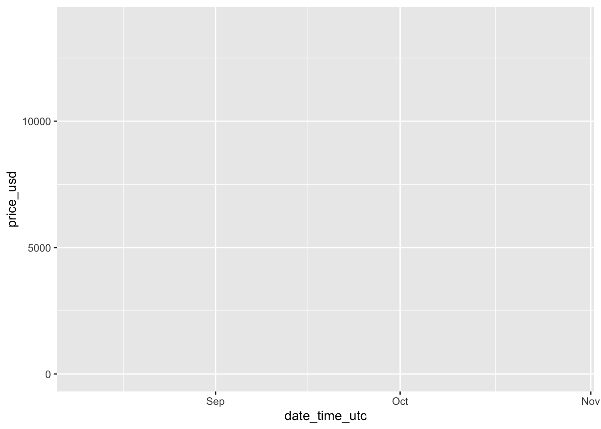
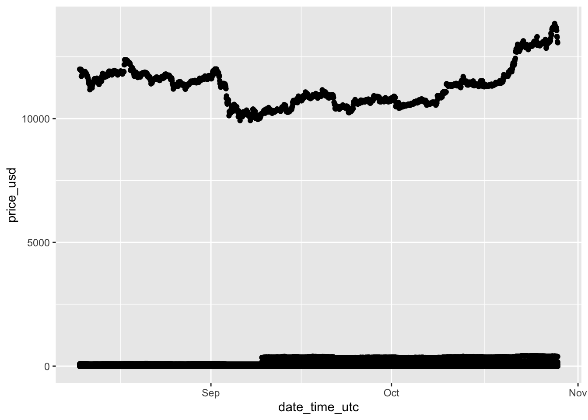
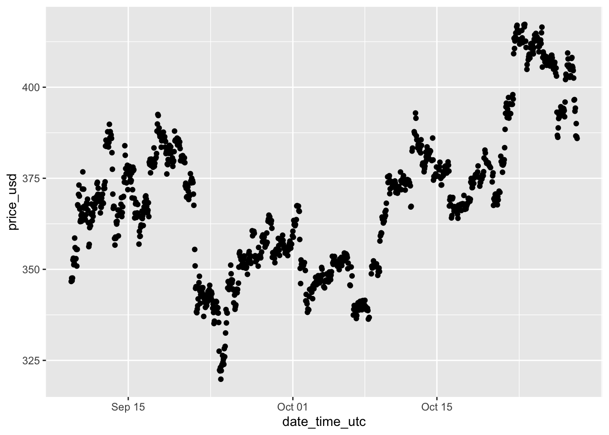
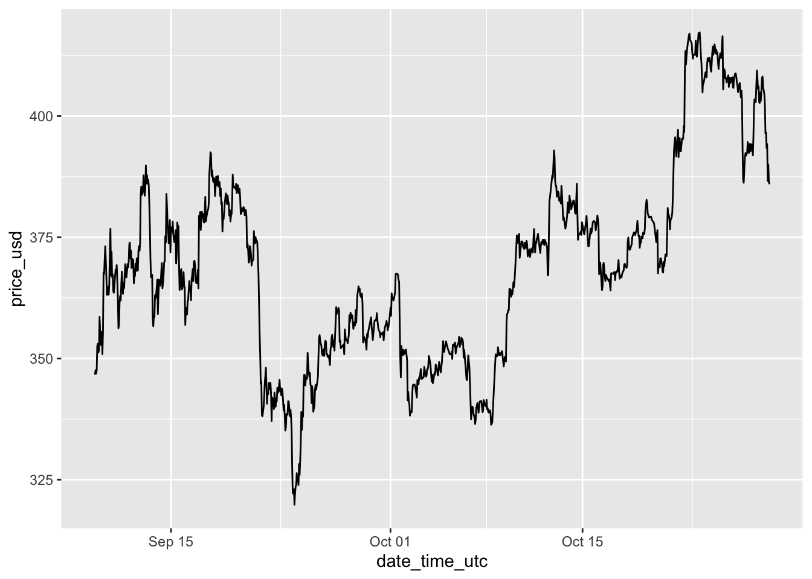
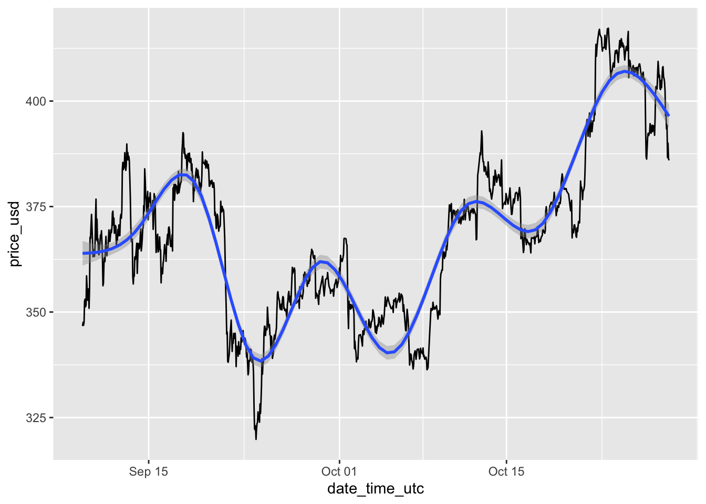
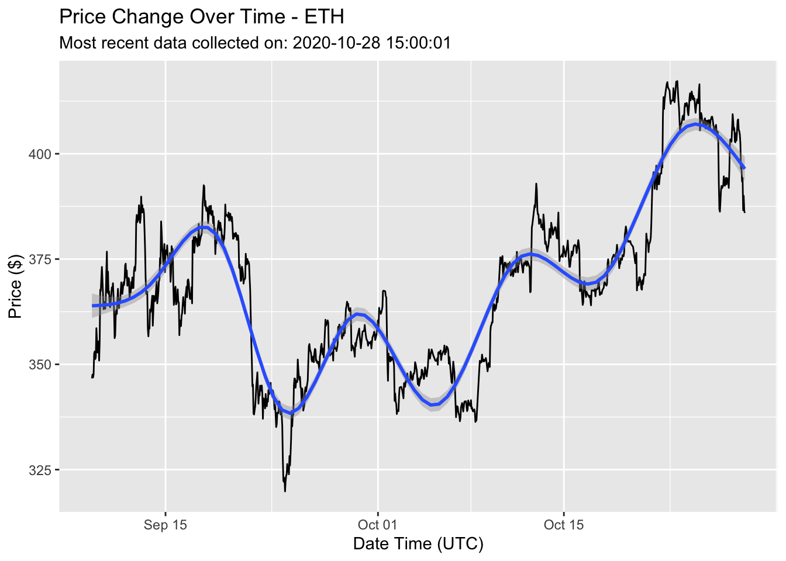
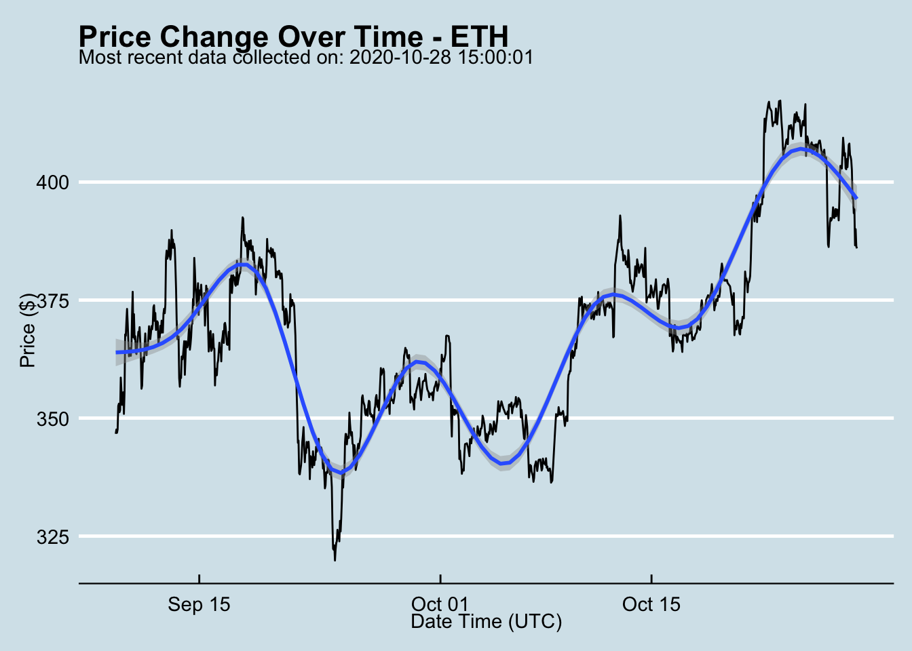
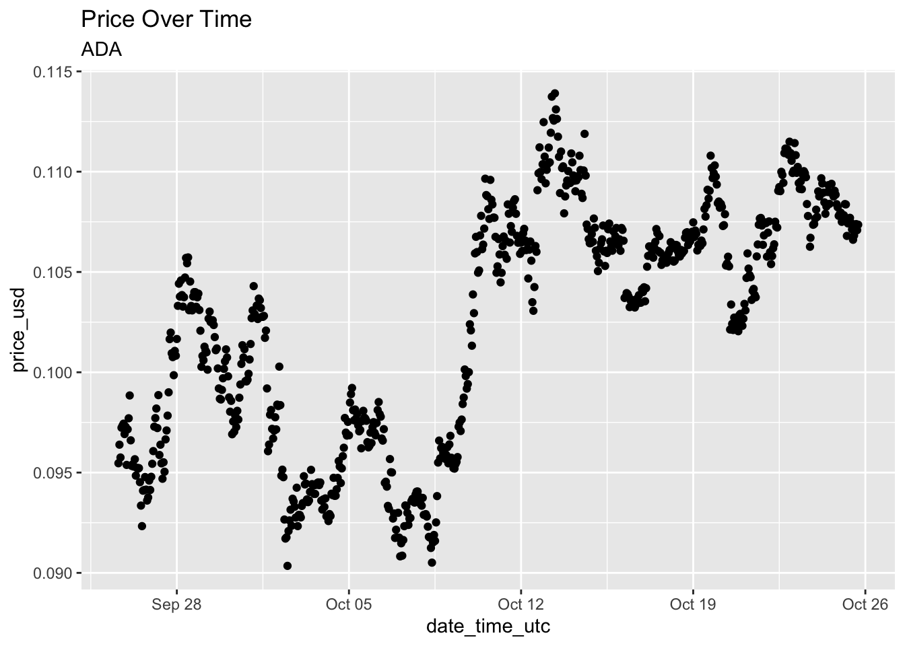
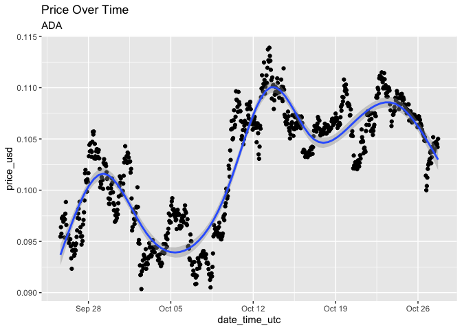
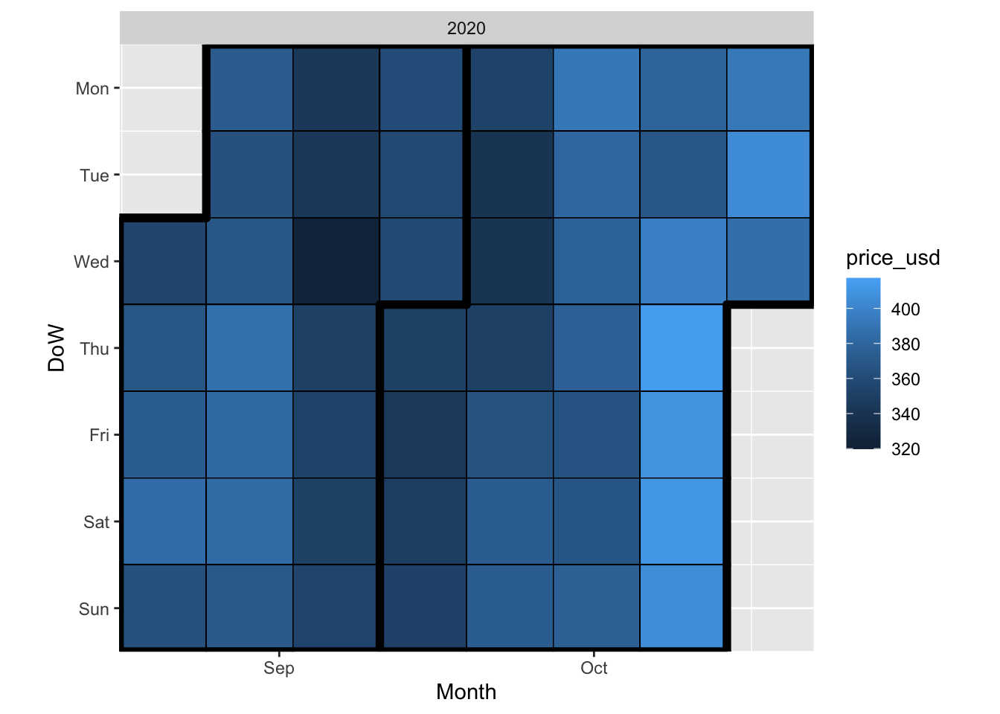

Section - 4 Visualization üìâ
Making visualizations using ggplot2 is one of the very best tools available in the R ecosystem. The gg in ggplot2 stands for the Grammar of Graphics, which is essentially the idea that many different types of charts share the same underlying building blocks, and that they can be put together in different ways to make charts that look very different from each other. In Hadley’s own words, “a pie chart is just a bar chart drawn in polar coordinates”, “They look very different, but in terms of the grammar they have a lot of underlying similarities.”
4.1 Basics - ggplot2
So how does ggplot2 actually work? “…in most cases you start with ggplot(), supply a dataset and aesthetic mapping (with aes()). You then add on layers (like geom_point() or geom_histogram()), scales (like scale_colour_brewer()), faceting specifications (like facet_wrap()) and coordinate systems (like coord_flip()).” - ggplot2.tidyverse.org/.
Let’s break this down step by step.
"start with ggplot(), supply a dataset and aesthetic mapping (with aes())
ggplot(data = cryptodata, aes(x = date_time_utc, y = price_usd))
The chart now shows up but is blank because we need to perform an additional step “You then add on layers (like geom_point() or geom_histogram())…”
We can take the exact same code as above and add + geom_point()
ggplot(data = cryptodata, aes(x = date_time_utc, y = price_usd)) +
# adding geom_point():
geom_point()
The most expensive cryptocurrency being shown, BTC in this case, makes it difficult to take a look at any of the other ones. Let’s try zooming-in on a single one by using the same code but making an adjustment to the data parameter to only show data for the cryptocurrency with the symbol ETH, first let’s filter the data down to those results only:
eth_data <- subset(cryptodata, symbol == 'ETH')ggplot(data = eth_data,
aes(x = date_time_utc, y = price_usd)) +
geom_point()
The axis automatically adjusted to the new data.
This is better, but geom_point() might not be the best choice for this chart, let’s change geom_point with geom_line and see what that looks like:
ggplot(data = eth_data,
aes(x = date_time_utc, y = price_usd)) +
# changing geom_point() into geom_line():
geom_line()
Let’s save the results as an object called crypto_chart:
crypto_chart <- ggplot(data = eth_data,
aes(x = date_time_utc, y = price_usd)) +
geom_line()We can add a linear regression line going through the plot to show the strength of the relationship between the two values. A horizontal line would show a weak relationship, while a sloped line would show a strong one.
crypto_chart <- crypto_chart + stat_smooth(method = 'lm')
crypto_chart## `geom_smooth()` using formula 'y ~ x'
Next, let’s adjust the labels on the chart:
crypto_chart <- crypto_chart +
ggtitle('Previous 24h % Price Change Vs. Next 24h Price % Change',
subtitle = max(eth_data$symbol)) +
xlab('Previous 24 hours % Price Change') +
ylab('Next 24 hours % Price Change')
# display the new chart
crypto_chart## `geom_smooth()` using formula 'y ~ x'
4.2 Using Extensions
4.2.1 ggthemes
Let’s import a ggplot2 “extension” by importing a package called ggthemes [@R-ggthemes] and apply a theme to change the overall look of the chart:
# apply the theme "economist"
crypto_chart <- crypto_chart + theme_economist()
# display the new chart
crypto_chart
You can find a full list of themes here: https://yutannihilation.github.io/allYourFigureAreBelongToUs/ggthemes/
4.2.2 plotly
In some cases, it’s helpful to make a chart responsive to a cursor hovering over it. We can convert any ggplot into an interactive chart by using the plotly [@R-plotly] package:
If you are not looking to convert a ggplot, plotly also provides its own framework for making charts available in R, you can find out more about it here: https://plotly.com/r/
4.2.3 gganimate
We can repeat the same steps on the complete dataset, and then animate the results for each of the groups. Here is the first chart again, animated based on the groupings we created in the previous section:
animated_prices <- ggplot(data = mutate(cryptodata, groups=symbol),
aes(x = date_time_utc, y = price_usd)) +
geom_point() +
transition_states(groups) +
ggtitle('Price Over Time',subtitle = '{closest_state}') +
view_follow() # this adjusts the axis based on the group
# Show animation:
animated_prices##
Frame 1 (1%)
Frame 2 (2%)
Frame 3 (3%)
Frame 4 (4%)
Frame 5 (5%)
Frame 6 (6%)
Frame 7 (7%)
Frame 8 (8%)
Frame 9 (9%)
Frame 10 (10%)
Frame 11 (11%)
Frame 12 (12%)
Frame 13 (13%)
Frame 14 (14%)
Frame 15 (15%)
Frame 16 (16%)
Frame 17 (17%)
Frame 18 (18%)
Frame 19 (19%)
Frame 20 (20%)
Frame 21 (21%)
Frame 22 (22%)
Frame 23 (23%)
Frame 24 (24%)
Frame 25 (25%)
Frame 26 (26%)
Frame 27 (27%)
Frame 28 (28%)
Frame 29 (29%)
Frame 30 (30%)
Frame 31 (31%)
Frame 32 (32%)
Frame 33 (33%)
Frame 34 (34%)
Frame 35 (35%)
Frame 36 (36%)
Frame 37 (37%)
Frame 38 (38%)
Frame 39 (39%)
Frame 40 (40%)
Frame 41 (41%)
Frame 42 (42%)
Frame 43 (43%)
Frame 44 (44%)
Frame 45 (45%)
Frame 46 (46%)
Frame 47 (47%)
Frame 48 (48%)
Frame 49 (49%)
Frame 50 (50%)
Frame 51 (51%)
Frame 52 (52%)
Frame 53 (53%)
Frame 54 (54%)
Frame 55 (55%)
Frame 56 (56%)
Frame 57 (57%)
Frame 58 (58%)
Frame 59 (59%)
Frame 60 (60%)
Frame 61 (61%)
Frame 62 (62%)
Frame 63 (63%)
Frame 64 (64%)
Frame 65 (65%)
Frame 66 (66%)
Frame 67 (67%)
Frame 68 (68%)
Frame 69 (69%)
Frame 70 (70%)
Frame 71 (71%)
Frame 72 (72%)
Frame 73 (73%)
Frame 74 (74%)
Frame 75 (75%)
Frame 76 (76%)
Frame 77 (77%)
Frame 78 (78%)
Frame 79 (79%)
Frame 80 (80%)
Frame 81 (81%)
Frame 82 (82%)
Frame 83 (83%)
Frame 84 (84%)
Frame 85 (85%)
Frame 86 (86%)
Frame 87 (87%)
Frame 88 (88%)
Frame 89 (89%)
Frame 90 (90%)
Frame 91 (91%)
Frame 92 (92%)
Frame 93 (93%)
Frame 94 (94%)
Frame 95 (95%)
Frame 96 (96%)
Frame 97 (97%)
Frame 98 (98%)
Frame 99 (99%)
Frame 100 (100%)
## Finalizing encoding... done!
We can slow down the animation by using animate() and choosing the speed in terms of the frames per second (fps)"
animated_prices_result <- animate(animated_prices,fps=1)##
Frame 1 (1%)
Frame 2 (2%)
Frame 3 (3%)
Frame 4 (4%)
Frame 5 (5%)
Frame 6 (6%)
Frame 7 (7%)
Frame 8 (8%)
Frame 9 (9%)
Frame 10 (10%)
Frame 11 (11%)
Frame 12 (12%)
Frame 13 (13%)
Frame 14 (14%)
Frame 15 (15%)
Frame 16 (16%)
Frame 17 (17%)
Frame 18 (18%)
Frame 19 (19%)
Frame 20 (20%)
Frame 21 (21%)
Frame 22 (22%)
Frame 23 (23%)
Frame 24 (24%)
Frame 25 (25%)
Frame 26 (26%)
Frame 27 (27%)
Frame 28 (28%)
Frame 29 (29%)
Frame 30 (30%)
Frame 31 (31%)
Frame 32 (32%)
Frame 33 (33%)
Frame 34 (34%)
Frame 35 (35%)
Frame 36 (36%)
Frame 37 (37%)
Frame 38 (38%)
Frame 39 (39%)
Frame 40 (40%)
Frame 41 (41%)
Frame 42 (42%)
Frame 43 (43%)
Frame 44 (44%)
Frame 45 (45%)
Frame 46 (46%)
Frame 47 (47%)
Frame 48 (48%)
Frame 49 (49%)
Frame 50 (50%)
Frame 51 (51%)
Frame 52 (52%)
Frame 53 (53%)
Frame 54 (54%)
Frame 55 (55%)
Frame 56 (56%)
Frame 57 (57%)
Frame 58 (58%)
Frame 59 (59%)
Frame 60 (60%)
Frame 61 (61%)
Frame 62 (62%)
Frame 63 (63%)
Frame 64 (64%)
Frame 65 (65%)
Frame 66 (66%)
Frame 67 (67%)
Frame 68 (68%)
Frame 69 (69%)
Frame 70 (70%)
Frame 71 (71%)
Frame 72 (72%)
Frame 73 (73%)
Frame 74 (74%)
Frame 75 (75%)
Frame 76 (76%)
Frame 77 (77%)
Frame 78 (78%)
Frame 79 (79%)
Frame 80 (80%)
Frame 81 (81%)
Frame 82 (82%)
Frame 83 (83%)
Frame 84 (84%)
Frame 85 (85%)
Frame 86 (86%)
Frame 87 (87%)
Frame 88 (88%)
Frame 89 (89%)
Frame 90 (90%)
Frame 91 (91%)
Frame 92 (92%)
Frame 93 (93%)
Frame 94 (94%)
Frame 95 (95%)
Frame 96 (96%)
Frame 97 (97%)
Frame 98 (98%)
Frame 99 (99%)
Frame 100 (100%)
## Finalizing encoding... done!# show slowed down results
animated_prices_result
4.2.4 Calendar Heatmap
For this kind of timeseries data, another nice view we can take of the data is a calendar heatmap, by using the package ggTimeSeries [@R-ggTimeSeries]:
calendar_heatmap <- ggplot_calendar_heatmap(eth_data,'date_time_utc','price_usd') #or do target_percent_change here?
calendar_heatmap
DoW on the y-axis stands for Day Of the Week
4.2.5 Rayshader
The previous chart is helpful, but a color scale like that can be a bit difficult to interpret. Although this is mostly for fun rather than being particularly useful, we could convert the previous chart into a 3d figure that is easier to visually interpret by using the amazing rayshader [@R-rayshader] package:
# First remove the title from the legend to avoid visual issues
calendar_heatmap <- calendar_heatmap + theme(legend.title = element_blank())
# Add the date to the title to make it clear these refresh twice daily
calendar_heatmap <- calendar_heatmap + ggtitle(paste0('Through: ',substr(max(eth_data$date_time_utc),1,13)))
# Convert to 3d plot
plot_gg(calendar_heatmap, zoom = 0.60, phi = 35, theta = 45)
# Render snapshot
render_snapshot('images/rayshader_image.png')
# Close RGL (which opens on plot_gg() command in a separate window)
rgl.close()This is the same two dimensional calendar heatmap that was made earlier.
Because we can programmatically adjust the camera as shown above, that means that we can also create a snapshot, move the camera and take another one, and keep going until we have enough to make it look like a video! This is not difficult to do using the render_movie() function, which will take care of everything behind the scenes for the same plot as before:
# This time let's remove the scale too since we aren't changing it:
calendar_heatmap <- calendar_heatmap + theme(legend.position = "none")
# Same 3d plot as before
plot_gg(calendar_heatmap, zoom = 0.60, phi = 35, theta = 45)
# Render movie
render_movie('images/rayshader_video.mp4')## [1] "C:\\Users\\Ricky\\Desktop\\Research-Paper-Example-NEW\\images\\rayshader_video.mp4"# Close RGL
rgl.close()Click on the video below to play the output
Awesome! Move on to the next section to start making predictive models for the data, or keep reading below to learn more about ggplot2 extensions.